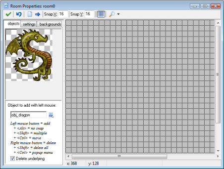
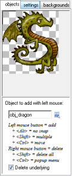
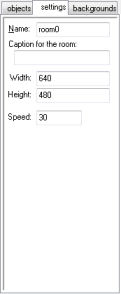
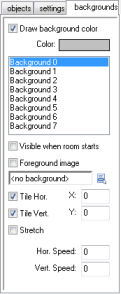

There are a large number of possibilities when creating rooms. Besides setting a number of properties and adding the instances of the objects you can add backgrounds, define views, and add tiles. Most of these options are discussed later. In this chapter we will only discuss some basic settings, the addition of instances of objects, and the setting of background images.
To create a room, choose Create Room from the Resources menu. The following form will appear:

At the top of the form there is a tool bar. On this you can indicate the size of the grid cells used for aligning objects. Also you can indicate whether or not to show the grid lines and whether or not to show the backgrounds, etc. It is sometimes useful to temporarily hide certain aspects of the room. Realize though that when you are adding instances of objects, these will always be shown, independent of the view setting.) There are also buttons to clear all instances from the room and to shift all instances over a number of pixels. Use negative numbers to shift them left or up. This is useful when for instance you decided to enlarge the room. (You can also use this to place instances outside the room, which is sometimes useful.). Finally there is the Undo button to undo the last change to the room and the OK button to save the changes. (Click on the cross at the top right to close the form without saving the changes.)
At the left you will see three tab pages (five in advanced mode). The objects tab is where you add instances of objects to the room. In the settings tab you can indicate a number of settings for the room. In the backgrounds tab you can set background images for the room.

To add instances to the room, first select the objects tab if this one is not already visible. Next select the object you want to add by clicking on the button with the menu icon (or by clicking in the image area at the left). The image of the object appears at the left. (Note that when you changed the origin of the sprite there is a cross in the image. This indicates how the instances will be aligned with the grid.) Now click with your left mouse button in the room area at the right. An instance of the object appears. It will snap to the indicated grid. If you hold the <Alt> key while placing the instance it is not aligned to the grid. If you hold down the mouse button while dragging it over the room, you move the instance to the correct place. If you hold the <Shift> key while pressing and moving the mouse multiple instances are added. With the right mouse button you can remove instances. In this way you define the contents of the room.
As you will notice, if you place an instance on top of another one, the original instance disappears. Normally this is what you want, but not always. This can be avoided by unchecking the box labeled Delete underlying at the left.
If you want to change the position of an instance, hold the <Ctrl> key and click with the left mouse button on the instance and hold down the button. You can now drag it to a new position. (Use <Alt> for precise positioning.)
If you hold the <Ctrl> key while clicking with the right mouse button on an instance, a menu appears. Here you can delete the object, type in a precise position for the instance, or move the bottommost instance at the position to the top or send the topmost instance to the bottom.

Each room has a name. Best give it a meaningful name. There also is a caption. This caption is displayed in the window caption when the game is running. You can set the width and height of the room (in pixels). Also you can set the speed of the game. This is the number of steps per second. The higher the speed, the smoother the motion is. But you will need a faster computer to run it.

At the top you will see the background color. You can click on it to change it. The background color is only useful if you don't use a background image that covers the whole room. Otherwise, best uncheck the box labeled Draw background color because this will be a waste of time.
At the top you see a list of 8 backgrounds. You can define each of them but most of the time you will need just one or two. To define a background, first select it in the list. Next check the box labeled Visible when room starts otherwise you won't see it. The name of the background will become bold when it is defined. Now indicate a background image in the menu. There are a number of settings you can change. First of all you can indicate whether the background image should tile the room horizontally and/or vertically. You can also indicate the position of the background in the room (this will also influence the tiling). A different option is to stretch the background. The background will then be scaled so that it fills the entire room. The aspect ration of the image will not be maintained. Finally you can make the background scrolling by giving it a horizontal or vertical speed (pixels per step). Better not use scrolling with a stretched background. The result will be a bit jaggy.
There is one more checkbox labeled Foreground image. When you check this box, the background is actually a foreground, which is drawn on top of everything else rather than behind it. Clearly such an image should be partially transparent to be of any use.